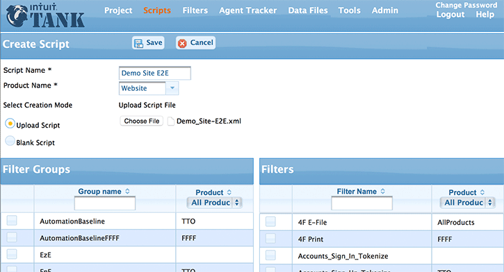
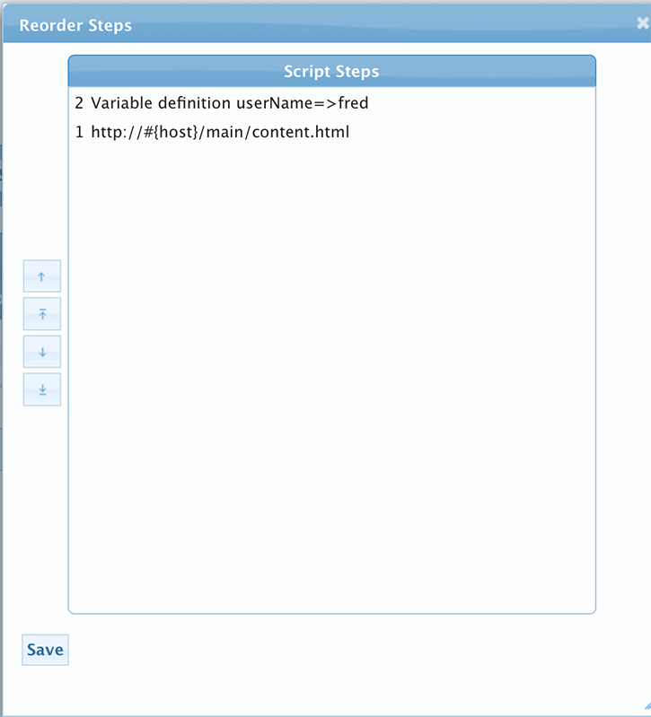
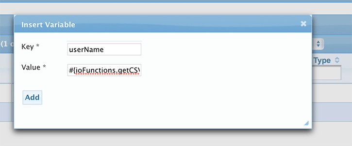
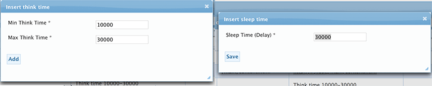
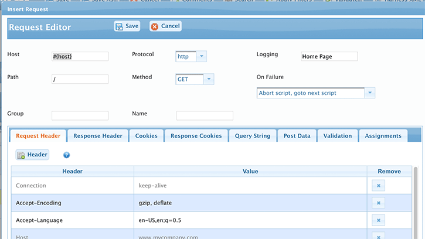

Scripts are accessed from the Scripts Top navigation link.
A Tank performance script is a preset of steps that virtual(mocked for load) users will execute during a load test.
A step can be composed from one of the following step types:
HTTP Request
Think Time
Sleep Time
Variable
Clear Session
Logic
Importing a recorded Script
There are two ways to generate a script.
Importing from a Tank-Proxy recording.
Manually creating a script.
This section will mainly focus on the Importing method.
Note
Currently Tank only supports Intuit Tank's own Proxy Recording tool. More info on the Recording tool is covered in the later sections.
Steps to Importing a Script
Click on the New Script icon which takes you to the Create Script form.
Fill in the Script Name and select from the appropriate Product name.
Click on the Browse button to select the recording file or the zip archive that contains the recording file. (If Creating a blank script just select the Blank Script radio button and skip this step.)
Select the appropriate Filter Groups (AND/OR) individual Filters. The Filters are used to transform the imported recording to a final Tank script. (Refer to the Filters section for more details on Filters and Filters Group.)
Click on the Save button. Once the Intuit Tank script is created, you will be taken back to the Scripts section and your script will appear at the top of the list.
Add a New Script

Create Script
Warning
If uploading a zipped recording, Tank will only extract the first one from the zip, in case there are more than one recordings in the uploaded zip.
Modifying a Script
Click on the name of the script (or) the Edit icon corresponding to the script you wish to edit. This will take you to the Edit Script form.
The attributes that can be edited include:
Name - The name of the script. This is an in-place editor. Simply click the name once to enter the Edit mode.
Product - The name of the product this script belongs to.
Owner - The user who owns the script.
Comments - Comments are accessed by the Comments button on the toolbar.
TODO: Edit verbiage for comments heading
Step Selection
Selection of script steps is modelled different than other sections.
Instead of check boxes, it uses a standard selection method, and highlights to indicate selection. Modify Script
This toolbar has actions for inserting, deleting, and changing the order of the steps.
Re-ordering Execution steps of a Script
Below are the instructions to re-order the Script steps.
To re-order/move a step you will need to click on the button labeled Reorder Steps . A pop-up window labeled Reorder Steps will appear.
Use the buttons to move steps up or down in the list. You can also drag the steps to the new order.
Click on the Save button to save the new ordering.

Reorder Script steps
Warning
The script is not saved to the database until you click Save in the main toolbar. Changes can be discarded at any time by clicking Cancel or by navigating to another panel. In general, it is recommended that you periodically save your updates.
Variables
Variables are used to store various values that can be used to parameterize requests (i.e. hostnames, query string, POST data, etc.).
You can define a variable to be set to a literal value or function.
A variable can also be set by parsing the response or headers of a given request. When using variables in requests, you need to add the @ symbol in front of the variable. This tells Tank to replace the variable with the actual value.
Adding a Variable
To add a Variable,
Click on the button labeled Variable . The Variable dialog will pop up.
In the Key field you will define your variable name.
The Value field is where you define the actual value or function you use will associate with the variable.
Click on the Add or Save button when done.

Adding a Variable
Note
You can cause the agent to use a Proxy Server for requests by setting a variable named TANK_HTTP_PROXY in the format proxyHost:proxyport. e.g. myProxyserver:80
Think Time and Sleep Time
Think Time is used to simulate a real user's page to page transitions in an application. In Tank, a random think time is generated based on the min and max values provided. Sleep time is used when you wish to wait for a specific amount of time.
Note
Think Time and Sleep Time are entered in milliseconds.
Adding Think Time and Sleep Time
To add a Think Time or Sleep Time, click on the appropriate button or the link to edit an existing one. The Insert or Edit dialog will pop up.
In the Key field you will define your variable name.
For Think Time you will need to enter the Minimum and Maximum time in miliseconds. For Sleep Time you just need to enter a single value.
Click on the Add or Save button when done.

Adding Think Time and Sleep Time
HTTP Request
In Tank, a request is either a HTTP(S)GET or POST request. Before we go through the steps of adding a new request, we will go over what makes up the basic request.
First, will start with the fields that can make up a request:
Host - You can enter either the FQDN, IP address or variable for the hostname. When you use a variable, you need to add the & symbol at the beginning of the variable. (e.g. @webserver) You can specify the port by appending a :[port] to the host. e.g. server.domain.com:9001
Protocol - Supported protocols HTTP or HTTPS.
Path - The path to the requested resource. The path can also be parameterized with variables. For e.g, #{rootContext}/ajax/logEmail
Method - Supported methods are GET or POST
Query String - The query parameters expressed as key value pairs that get appended to the url.
POST data - Parameters expressed as key value pairs that get posted in the body of the request.
Group - Allows you to group requests under a label. Grouping is used with On Failure field below. Note: This field is optional.
Logging - This field is used to gather response times on a specific request. Note: This field is optional.
On Failure - Defines what action to take next when a response validation has failed.
The following are the 5 actions that can be taken by the tool when validation has failed:
Abort Script, goto next Script (Default) – The virtual user will skip to the next script defined in the project. If there is only one script, the virtual user will start from over from the top of the script.
Continue to next request – Execute next request.
Skip remaining requests in a group – Will execute the next step after the last request with the group label.
Goto Group – Jumps to the first step with the group label.
Terminate user – The virtual user is terminated.
Name - Allows a user to uniquely label a request. (i.e. Login request, Signout request or Print request). Note: This field is optional.
Adding a HTTP Request
To add a HTTP request,
Click on the appropriate button or the link to edit an existing one. The Insert or Edit dialog will pop up.
Fill in the appropriate top level attributes such as Host, Path, Name, etc.
For each of the tabs, you can add or modify the key value pairs.

Adding a HTTP Request
Note
Key and Value are in-place edit components. click on them to change their value and click the check mark to accept the change or the 'X' to revert.
Not all Heders are re-played. The following are filtered out:
Host
Cookie
Connection
If-None-Match
If-Modified-Since
Content* (Content-Type, Content-Length)
Supplemental Properties
The following Supplemental properties can be added to the HTTP Request.
Response Header - Response Headers are read only. They are here to help you in creating validation or assignemnts.
Request Cookies - Cookies lets you see which cookies were set when the request was made. However, only cookies that are set from variables are replayed.
Response Cookies - Response Cookies are read only.
Query String - Used primarily with GET requests.
Post Data - Only valid for POST requests.
Validation - Perform validation specified. If validation fails, the On Fail action is performed. Key is the xpath or expression for the value.
Assignments - Assign values to variables for use in other script steps. Key is the variable name and value is the xpath or expression for the value.
Note
Two Synthetic headers can be validated as well:
- `HTTPRESPONSEMESSAGE` - The http response message. e.g. `OK` or `Not Found`
- `HTTPRESPONSECODE` - The http response code. e.g. `200` or `404`
Finally, Click on the Save button when done.
Clear Session
Inserting this step clears the session, which can be thought of as comparable to closing and re-opening the browser.
This accomplishes the following:
Clears cookies
Clears the cache
Logic
Inserting this step allows the user to use Javascript to control the flow of the script, change variable values, or perform any custom logic that is too complex for the normal operations.
Logic step scripts are written in Javascript. They have access to the following objects:
Variables - The current variables in the test plan execution.
Request - The previous request in the test plan execution.
Response - The previous response in the test plan execution.
Note
There are functions that are added to each script for accessing these values.
Control flow is controlled by setting the action output parameter in the ioBean. Handled values are:
goto:[groupName] - Jump to a group within the script with the specified name.
restartPlan - Restart the test plan from the start.
abortScriptGroup - Aborts the current script group and proceeds to the next script group.
abortScript - Aborts the current script and proceeds to the next script.
abortGroup - Aborts the current group within a script and proceeds to the next request after the current group.
terminateUser - Terminates the current user.
Tip
There are functions that are added to each script for accessing these values.
The following functions are added to each script before it is run and are available for use.
Functions added at each Script
/** * prints the line to the output. will be log * * @param line * the line to print */functionlogWithDate(line){ioBean.println(newDate().toString+": "+line);}/** * prints the line in info context. * * @param line * the line to print */functionlog(line){ioBean.println(line);}/** * prints the line in error context. * * @param line * the line to print */functionerror(line){ioBean.error(line);}/** * prints the line in debug context. Will be logged to console or test but not * to logs when in production. * * @param line * the line to print */functiondebug(line){ioBean.debug(line);}
functiontoJsonObj(text){try{returnJSON.parse(text);}catch(e){error("Error parsing json: "+e);}returntext;}functiontoJsonString(jsonObj){try{returnJSON.stringify(jsonObj,null,'\t');}catch(e){error("Error converting json to string json: "+e);}returnjsonObj;}
/*** gets the com.intuit.tank.http.BaseRequest object of the last call made.* * @return the request or null if no requests have been made*/functiongetRequest(){returnioBean.getInput("request");}/*** gets the com.intuit.tank.http.BaseResponse object of the last call made.* * @return the response or null if no requests have been made* */functiongetResponse(){returnioBean.getInput("response");}/*** gets the request body as string if not binary* * @return the body or empty string if null or binary*/functiongetResquestBody(){if(getRequest()!=null){returngetRequest().getBody();}return"";}/*** gets the response body as string if not binary* * @return the body or empty string if null or binary*/functiongetResponseBody(){if(getResponse()!=null){returngetResponse().getBody();}return"";}/*** Returns the value of the variable or null if variable does not exist* * @param key* the variable name* @returns the variable value.*/functiongetVariable(key){returnioBean.getInput("variables").getVariable(key);}/*** Sets the value of the variable.* * @param key* the variable name to set* @param value* the value to set it to*/functionsetVariable(key,value){ioBean.getInput("variables").addVariable(key,value);}
/** * jump to a group within the script with the specified name. * * @param groupName * the name of the group to go to. if the group does not exist, it * skips to next script. */functiongotoGroup(groupName){setAction("goto "+groupName);}/** * restart the TestPlan from the start. */functionrestartPlan(){setAction("restartPlan");}/** * aborts the current ScriptGroup and proceeds to the next. * * @returns */functionabortScriptGroup(){setAction("abortScriptGroup");}/** * aborts the current Script and proceeds to the next. */functionabortScript(){setAction("abortScript");}/** * aborts the current group and proceeds to the next request after the current * group. */functionabortGroup(){setAction("abortGroup");}/** * terminates this user. */functionterminateUser(){setAction("terminateUser");}/** * sets the action in the output. */functionsetAction(action){ioBean.setOutput("action",action);}